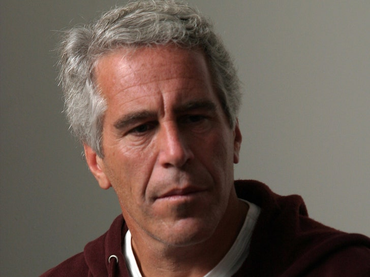
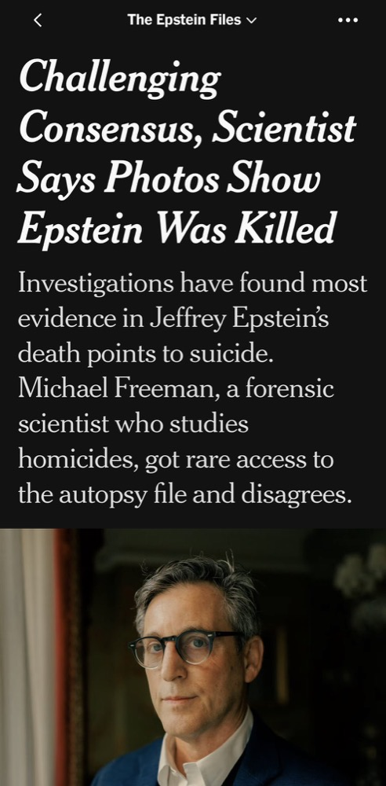
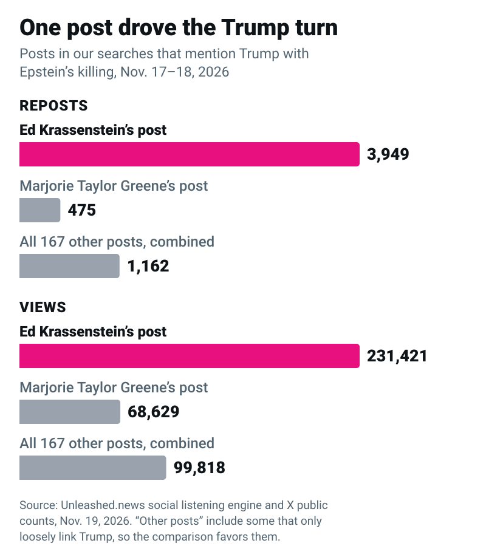

Exposed in Real Time: An Information Operation Taking Shape to Blame Trump for Epstein’s Death
Within hours of a scientist saying he has “no idea who” killed Jeffrey Epstein, Unleashed.news’s real-time social intelligence caught the early signatures of an information operation taking shape to pin the death on President Trump: one 1.1-million-follower post naming him, a relay of high-reach accounts, copied wording and a recycled clip. Epstein’s own words point the other way.
Unleashed.news’s real-time social intelligence has caught the early signatures of an information operation taking shape on X: an effort to pin Jeffrey Epstein’s death on President Donald Trump. It began within hours of a forensic scientist saying he has “no idea who might have killed” Epstein. By the next afternoon, the Trump critic Ed Krassenstein and his 1.1 million followers had a suspect: Trump, the one powerful man Epstein openly wanted to destroy. Then came the pattern our engine is built to catch: a relay of high-reach accounts adding piece after piece, Krassenstein’s words copied nearly verbatim without credit, and a 16-month-old clip recycled under a caption that overstates it. And the charge itself requires Epstein to have held something over a man he boasted he was “the one able to take him down,” a threat he never carried out.
Who Lit the Fuse
Unleashed.news runs its own social listening engine, which watches X and monitors open-source intelligence, ranking posts by how fast they are being reposted so that we can see a narrative forming before it becomes the news. Starting late Tuesday morning, it pulled the most relevant posts about Epstein and has tracked them minute by minute since. Of the first 164, 35 name Trump; at least 21 attack him and four defend him. What matters is who carried the story, and the accounts with real reach split two ways. The biggest megaphones spread the murder claim without naming a suspect. It went mainstream at 10 a.m. Tuesday, when TMZ, with 9 million followers, posted “Forensic experts suggest Jeffrey Epstein was killed, despite suicide ruling,” linking its own story; the post drew more than 4 million views. Five and a half hours later, the market-news account unusual_whales relayed it to 5.4 million followers, adding another 1.7 million views, and Jon Lemire, a co-host of “Morning Joe,” shared The New York Times story with his 273,000 followers. None of them named Trump.

1.9K Replies3.3K Reposts32K Likes4.1M ViewsView this post on X ↗The Trump turn came from a handful of high-profile voices, and a targeted search of the 100 most relevant posts pairing Epstein, Trump and murder found its hub. At 4 p.m. Tuesday, Krassenstein posted: “CNN is now reporting on forensic experts who say Jeffrey Epstein was likely killed while in custody. William Barr was Attorney General. Donald Trump was President. To me, Trump appears to have a motive, given all of his ties to Epstein, the lengths at which he has gone to cover up the files, and all of the accusations against him.” By Wednesday afternoon it had more than 3,500 reposts, 10,500 likes and 211,000 views, nearly eight times the reposts of any other post we found tying the death to Trump. It drew more than 1,000 replies.
Others with standing joined in. Mark Epstein, Freeman’s source for the autopsy file, said this week, “Someone should be asking Donald Trump what he knows about this,” and, “I am not accusing him of anything. But any investigator would say he is a person of interest,” OK! Magazine reported. Two hours after Krassenstein, former Rep. Marjorie Taylor Greene, who has 5.4 million followers and now calls herself an independent, posted that Epstein’s murder “lines up with how hard I had to fight alongside Thomas Massie against President Trump.” On Wednesday, Peter Arenella, a UCLA law professor whose X profile calls him a “proud Democrat,” quoted a retired professor and former FBI task force member, John McLaughlin, who blamed William Barr, and went further: “Prof McLaughlin believes that Trump had Epstein killed. So do I.” McLaughlin’s post never named Trump, and its claim that Epstein “was on a 24hr suicide watch” is wrong; the inspector general found he came off suicide watch on July 24. Every post we collected that ties the death to Trump came from an account that opposes him, by its own profile or its own posts.

307 Replies475 Reposts2.3K Likes69K ViewsView this post on X ↗At 8:35 a.m. Eastern on Wednesday, PoliticsVideoChannel, a political-video account with 267,000 followers, posted a clip of Epstein’s brother, Mark, saying, “We know that Jeffrey had dirt on Donald Trump,” under the caption that he “wouldn’t be surprised if Trump ordered his brother’s murder.” The clip is not new. Mark Epstein gave the interview to Don Lemon in July 2025. And the caption goes further than he did. Asked whether Trump had his brother murdered, he said, “I’m not saying that. I’m saying if that’s what it was, I wouldn’t be surprised,” Mediaite reported. In the July 2025 interview he also said Steve Bannon had called Jeffrey the only person he feared, for Trump’s sake.
How We Spotted the Operation
Our engine is built to spot an information operation while it is still forming, before its frame hardens into what everyone knows. The tactics are well documented: astroturfing, an orchestrated message made to look as if it comes from “grassroots participants,” and information laundering, the surfacing of claims “from unverified sources into the mainstream.” In less than a day, the engine caught five signatures of both. First, a frame from the top. One post, Krassenstein’s, supplied the motive, and it drew more than twice the reposts of the other 167 posts in our searches that mention Trump with the killing, combined. Second, a relay. High-reach accounts each added a piece: Greene the political grievance two hours later, PoliticsVideoChannel a clip overnight, and on Wednesday the man who had handed over the autopsy file the words “a person of interest.” Third, copied wording. Within 22 hours, four other accounts in our searches posted Krassenstein’s words nearly verbatim, without credit. Fourth, recycled evidence. The only “proof” in circulation was a 16-month-old interview, recaptioned to say more than the speaker did. Fifth, speed. The claim went from a scientist with no idea who did it to a named suspect six hours after TMZ took it mainstream.

In our assessment, those five signatures mark an information operation in its opening stage, aimed at pinning Epstein’s death on Trump. On their own, none of them proves coordination; prominent accounts react to the same news, and Unleashed.news is not saying any single account is fake or naming who, if anyone, is directing it. What would confirm it is what we are now watching for: the copied wording spreading further, a burst of new accounts carrying the claim, and the claim crossing from posts into the mouths of officeholders and television hosts. We will report each one as it happens.
The Man Who Set the Frame
The account that set the frame was once banned from the platform for life. On May 23, 2019, Twitter permanently suspended Ed Krassenstein and his twin brother, Brian, who posts as @krassenstein to more than 1 million followers. “Operating multiple fake accounts and purchasing account interactions are strictly prohibited,” the company said, The Daily Beast reported. The brothers denied buying accounts or engagement and said their extra accounts were only for keeping watch on people who harassed them; the pro-Trump activist Jacob Wohl claimed he had spent $1,000 to get them banned. Their accounts came back in December 2022, after Elon Musk bought Twitter, Wikipedia records.
Two years before the ban, the brothers’ money was in federal court. In August 2017, the Justice Department filed a verified complaint in Fort Myers, Fla., built on the work of a Homeland Security Investigations agent, alleging that since at least 2003 the brothers had “owned and operated websites devoted to the promotion of fraudulent HYIPs,” high-yield investment programs that the complaint likens to Ponzi schemes, and that the advertising fees those schemes paid them “are the proceeds of wire fraud.” Both brothers and their wives consented to the forfeiture. On Jan. 22, 2018, U.S. District Judge Sheri Polster Chappell found that $450,000 from the sale of the brothers’ Cape Coral property was forfeitable “as property that constitutes proceeds from wire fraud,” and ordered it forfeited, the docket shows. Neither brother was ever charged with a crime. They say they sold banner ads to schemes disguised as legitimate companies and settled because fighting would have cost about as much, Brian Krassenstein wrote.
Then there is the video. In September 2018, a phone video spread online in which Brian Krassenstein, asked whether the resistance is his job, answers, “Of course we get paid, you know. Of course there’s a … higher-ups pay us,” and moments later, “People pay us. They want us to help sow the division and to take over Trump’s Twitter feed.” The brothers say it was cut from a parody they filmed at home to promote a book, with Ed asking the questions, and that the full version shows it was a joke, Brian Krassenstein wrote. Unleashed.news reviewed that full version. It contains the same words, and nothing in its two minutes says it is a parody. It names no one, either: the video does not say who the “higher-ups” are, and Federal Election Commission records from 2015 through 2026 show no payment by name from any federal campaign, party or PAC to either brother, though such records would not show money passed through an agency. The payers on the record are a platform and a crypto fund: X paid the brothers about $49,000 in its first creator payout in July 2023, and their crypto start-up NFTz, with Ed as chief executive and Brian as chief financial officer, says it was funded in 2022 by the DeSo Foundation’s $50 million ecosystem fund. Both say no one but X pays them for their posts and that they have turned PACs down. None of this shows who, if anyone, is behind this week’s post. It does show who wrote it: a man a platform once banned for fake accounts and bought interactions, whose brother said on camera that “higher-ups” pay them to “sow the division.”
The Ground Was Prepared
The political ground was prepared long before Freeman spoke. In July 2025, the columnist Juan Williams wrote in The Hill, in a column republished by Yahoo News, “Memo to Democrats: If you want to trigger a wave of wins in next year’s midterms, demand hearings on the Epstein files.” That week, party strategists told NOTUS the relentless Epstein attacks were “part of a new Democratic messaging strategy,” and The New Yorker observed that “Democratic élites are beating the Epstein drum, too,” adding that whether they were “true skeptics or merely spy an opening to troll Trump is open to debate.” In November 2025, House Oversight Committee Democrats released Epstein’s “dog that hasn’t barked” email, and the White House answered that “the Democrats selectively leaked emails to the liberal media to create a fake narrative to smear President Trump,” CBS Austin reported. Even Wikipedia’s entry on the “Epstein didn’t kill himself” meme now records the split: on the right, the theories blame Hillary Clinton, while “in leftist and Democratic circles, the theories predominately accuse Donald Trump, who was the sitting US President at the time of Epstein’s death.”
Then, on Wednesday morning, the party moved. Rep. Robert Garcia, the Oversight Committee’s top Democrat and its chairman-to-be when Democrats take over the House in January, launched document preservation letters to 12 Trump family members, allies and officials. Four of them concern what his office calls “the White House Epstein cover-up,” including a notice to the director of the Bureau of Prisons, the agency that was holding Epstein when he died. “This is just the beginning,” Garcia said; the White House called the effort “sham investigations,” NPR reported. None of the letters concerns how Epstein died. But they landed the same day Mark Epstein called Trump a person of interest, and they put Epstein at the top of the agenda of the committee Democrats will run in January. A search of verified X accounts on Wednesday found no Democratic officeholder tying the death to Trump in public, yet. Unleashed.news is watching for the first one who does.
What Freeman Found, and What He Didn’t
The finding that lit the fuse deserves a straight account. Freeman is editor-in-chief of the Journal of Forensic and Legal Medicine. He studied Epstein’s autopsy records and photographs, which Epstein’s brother provided, and concluded, “The injuries that were documented by the medical examiner were not consistent with the suicidal hanging,” CBS News reported. He told BBC Newsnight he believes Epstein “was strangled, most likely from behind.” Freeman and his colleagues Anders Eriksson and Itiel Dror called the evidence “most consistent with a homicidal strangulation from behind using a narrow knotted fabric ligature.” University College London canceled the talk on its campus, citing “well-being implications for our students,” and it moved to the Middle Temple, The New York Times reported.
The work has limits. A journal rejected Freeman’s report, he told CBS, and he plans to resubmit it. The New York City medical examiner’s office said it “stands by its determination.” Dr. Kristin Roman, who performed the autopsy, told federal authorities, “This doesn’t look anything like a strangulation,” the Times reported, and pathologists who saw some of the photographs told the Times the neck mark was “atypical for a hanging” but could still be “consistent with suicide.” Freeman himself has named no one. Shortly before the talk, the Times reported, the autopsy photographs were posted online. Mark Epstein called for “a true homicide investigation” and asked, “Why is the Justice Department covering this up?” RadarOnline reported.
The Brother’s Story Keeps Changing
The Bannon line Mark Epstein cited traces to one source, and it is not Bannon: the author Michael Wolff’s 2021 book “Too Famous,” in which Wolff wrote that he heard Bannon tell Epstein, “You were the only person I was afraid of during the campaign,” Salon reported. The words “for Trump’s sake” are not in Wolff’s account.
Mark Epstein’s best-known claim has changed in the telling, too. He told Lemon that in 2016 his brother said “if he said what he knew, they’d have to cancel the election,” and that Jeffrey never told him what he knew. The first time he told the story publicly, in January 2024, it covered both candidates: “If I said what I know about both candidates, they’d have to cancel the election,” The Daily Beast reported, citing the New York Post. The candidates in 2016 were Trump and Hillary Clinton. No record shows Jeffrey Epstein saying it to anyone but his brother. Asked on BBC Newsnight in July 2025 whether he had any evidence placing Trump in the category of offense his brother was accused of, Mark Epstein answered, “I have no evidence of that, no,” Newsweek reported.
Bannon’s own ties to Epstein are documented, and they cut against the brother’s story. The Justice Department’s Epstein files hold “hundreds of emails and text messages” between the two men, NBC News reported, and they show both men running Trump down: in March 2018, Bannon texted that Trump “had no idea what was in the bill,” and in a December 2018 exchange about a “him” the messages do not name, Bannon wrote, “I think it’s beyond borderline — 25 amendment,” Mediaite reported.
The Man Epstein Wanted to Destroy
Epstein’s contempt for Trump runs through his own correspondence, released by the House Oversight Committee in November 2025. He called Trump “dopey donald” and “demented donald” in emails to Wolff in January 2018, and “borderline insane” to the economist Lawrence Summers later that year. In December 2018, as reporters and federal prosecutors closed in on him, an acquaintance texted that “they’re really just trying to take down Trump and doing whatever they can to do that.” Epstein replied, “Its wild,” and then, “because i am the one able to take him down,” The New York Times reported.
Trump’s side of the break is on the record. Asked aboard Air Force One on July 29, 2025, why he had broken with Epstein, the president said Epstein had taken workers from his business: “he took people that work for me. And I told him, ‘Don’t do it anymore.’ And he did it. And I said, ‘Stay the hell out of here,’” the official transcript records. The White House had said Trump removed Epstein “for being a creep,” NBC News reported. By October 2007, Mar-a-Lago’s registry listed Epstein’s account as “closed,” PolitiFact reported.
A year before that, by the account of Palm Beach’s police chief, Trump called the police about Epstein. In a 2019 FBI interview summary released with the Justice Department’s Epstein files, former Chief Michael Reiter said Trump told him, “thank goodness you’re stopping him, everyone has known he’s been doing this,” and called Ghislaine Maxwell “evil,” Fox News reported. A Justice Department official said the department was “not aware of any corroborating evidence” of the call, and White House press secretary Karoline Leavitt said it “may or may not have happened.”
The rivalry began in a courtroom. On Nov. 15, 2004, Trump and Epstein bid against each other in bankruptcy court in West Palm Beach for Maison de l’Amitié, the oceanfront estate of the bankrupt nursing-home magnate Abe Gosman. Epstein dropped out after his $38.6 million bid was topped; Trump won at $41.35 million. The trustee called it “two very large Palm Beach egos going at it,” and said Epstein, unlike Trump, “seemed interested in living at the place,” The Washington Post reported. Epstein wanted the house. Trump took it.
The Dog That Didn’t Bark
Then there is the dog. On April 2, 2011, Epstein emailed Maxwell: “I want you to realize that that dog that hasn’t barked is trump.. [Victim] spent hours at my house with him , he has never once been mentioned.” The email goes on with two fragments, “Police chief” and “etc.,” and ends, “im 75 % there.” Maxwell replied, “I have been thinking about that,” CBS Austin reported. The Democrats released it on Nov. 12, 2025, under a headline about a White House “Coverup of Epstein Files.” Leavitt said the unnamed victim was “the late Virginia Giuffre.”
Giuffre answered the question herself, under oath. Four weeks before Epstein’s email, she had told the Mail on Sunday that Trump “didn’t partake in sex with any of us,” in a March 6, 2011, interview. On Nov. 14, 2016, in a sworn deposition, Maxwell’s lawyer read her the paper’s account of Trump, and she corrected it: “It’s true that he didn’t partake in any sex with us … but it’s not true that he flirted with me. Donald Trump never flirted with me,” the sworn transcript shows. Asked when Trump had flirted with her, she said, “He didn’t. That’s what’s inaccurate.” Of the line the paper attributed to Trump, “You’ve got the life,” she said, “I never said that to her.” She could not remember ever seeing Trump and Epstein together, or seeing Trump at Epstein’s homes or on his island, and her only basis for calling the two men friends was that “Jeffrey told me,” the transcript shows. In an earlier deposition that year, she had testified, “I don’t think Donald Trump participated in anything,” PolitiFact reported. Maxwell told the Justice Department in 2025, “I never witnessed the President in any inappropriate setting in any way,” PBS NewsHour reported.
The phrase comes from Arthur Conan Doyle’s 1892 Sherlock Holmes story “Silver Blaze,” in which the clue is the dog that did not bark in the night, because it knew the intruder. Read that way, the email is a stocktaking. Three years after his Florida guilty plea, Epstein told the woman closest to him that Trump was the one name no one had accused; four weeks earlier, the Mail on Sunday had named Trump only to say he “didn’t partake.” Nothing in the exchange describes a single act by Trump. That reading is ours; neither Epstein nor Maxwell explained the email.
Exposure, Then Incident
If Epstein held anything on Trump, the summer of 2019 was the time to use it. He was in the Metropolitan Correctional Center in Manhattan, denied bail on July 18, the inspector general’s report records, and his address book was back in the news. The book had first surfaced through his former house manager, who tried to sell it to an undercover FBI employee in 2009 and died in 2014, CNN reported; Gawker published it in January 2015. On July 22, 2019, sixteen days into Epstein’s detention, New York magazine published the roster again, name by name, and CNBC ran the names at 1:29 p.m.: royalty, presidents, prime ministers, financiers and entertainers.
About 12 hours later, at 1:27 a.m. on July 23, officers “found Epstein with an orange cloth around his neck,” the inspector general reported; Epstein first told staff his cellmate had tried to kill him. What followed, by the inspector general’s account, was a chain of failures. Epstein came off suicide watch on July 24 and off psychological observation on July 30. On July 29, a disk failure left about half the jail’s cameras unable to record; his cell door was in no recording camera’s view. On July 30, a staff psychologist emailed more than 70 staff members that Epstein “needs to be housed with an appropriate cellmate.” On Aug. 8 he changed his will. At about 8:30 a.m. on Aug. 9, his cellmate was transferred out, and no one replaced him.
The Last 21 Hours
The second exposure came that day. At 9:25 a.m. on Friday, Aug. 9, the federal appeals court in Manhattan docketed the first of 13 appendices of the “unsealed summary judgment record” from Giuffre’s lawsuit against Maxwell, nearly 2,000 pages, including a deposition in which Giuffre named Prince Andrew, former Senate Majority Leader George Mitchell, former New Mexico Gov. Bill Richardson and others, CNBC reported; all of them denied her allegations. The inspector general wrote that the documents “contain substantial derogatory information about Epstein.” Epstein spent the day with his lawyers, who asked before 1 p.m. whether he could be moved or housed without a cellmate.
Then came the call. Prison policy requires every inmate call to go through the recorded Inmate Telephone System. At about 6:45 p.m., a Unit Manager serving as the warden’s stand-in after hours walked Epstein to his unit to call his mother. He “plugged the telephone line into the legal line, which was not recorded,” and dialed a number in the 646 area code. “A male answered.” Epstein’s mother had died in 2004. The jail’s captain told investigators he had ordered the call “monitored and logged”; the Unit Manager said the decision was his alone, told the officers, “make sure he gets his 15-minutes,” and left the building. The call ran 21 minutes, from 6:58 to 7:19 p.m. The inspector general found no signed acknowledgment form and no notice to investigators. The Unit Manager’s reason for the unrecorded line was that Epstein had no working phone account. He had one.
Epstein had wanted exactly that kind of call. Before Aug. 9, he told an officer, “[T]hey said they monitor those phone calls.” One of his lawyers later asked the officer “how Epstein could get an unmonitored call,” and was told the decision belonged to a lieutenant or a Unit Manager. The person on the line, “Individual 1,” declined to be interviewed; her lawyer told prosecutors she had been in Belarus. The inspector general never checked that, noting only that “there are methods by which a call to the 646 area code could connect to a telephone in Belarus.” Epstein told her, “They are trying to keep me safe.” The record does not say who answered. It shows a lawyer asking how to get an unmonitored call and a Unit Manager granting one on the one line built not to record. That is where the documents stop.
Overnight, no one on Epstein’s unit did the required 30-minute rounds after about 10:40 p.m., and the count slips and round sheets were falsified. From about 1 a.m. to 3 a.m., the officers, Tova Noel and Michael Thomas, “appeared to be sleeping,” the inspector general found; prosecutors later dropped the charges against both under deferred-prosecution agreements. At about 6:30 a.m. on Aug. 10, Epstein was found hanged, and he was pronounced dead at 7:36 a.m. Then, according to an FBI memo, jail employees “used boxes and sheets to create what appeared to be a human body,” loaded it into a white medical examiner’s van for the press to follow, and sent Epstein’s body out in a black vehicle that departed “unnoticed,” CNBC reported.
The inspector general concluded that “the combination of these and other failures led to Epstein being unmonitored and alone in his cell,” and that the office “did not uncover evidence contradicting the FBI’s determination regarding the absence of criminality.” In “Jeffrey Epstein Was A CIA Asset,” Unleashed.news founder Jason Sullivan argues that the renewed exposure of 2019 turned Epstein “from the safest man in their lives into the single most dangerous one” for the powerful people who knew him, and that the failures inside the MCC came “one after another, like tumblers falling in a lock.” Sullivan presents that timing as sequence, not proof.
The point
What we found: an information operation is taking shape to pin Epstein’s death on Trump, and the record it needs does not exist. The script has been flipped. A murder question that the record points at the people whose secrets Epstein kept is being turned, by accounts that openly oppose Trump, onto the one man Epstein wanted to destroy, with the marks of an operation forming around it. And the new narrative needs Epstein to have held something on Trump, when his own record says he wanted to hurt Trump and never could. He bid against Trump for a Palm Beach estate and lost; Trump threw him out of Mar-a-Lago; by the police chief’s account, Trump helped the police who went after him. In 2018 Epstein called Trump “demented” and “borderline insane,” and wrote that he was “the one able to take him down.” Yet when he took stock of Trump in private, in 2011, the clue he gave Maxwell was a silence: the dog that had not barked. In the next breath he wrote “Police chief,” five years after Trump, by Reiter’s account, called the chief to thank him; our reading is that Epstein knew who had helped expose him. The brother’s “cancel the election” story, in its first public telling, named both 2016 candidates; the version circulating now names one. And the chronology of 2019 points to the people Epstein had kept secrets for, not the man he openly wanted to destroy: about 12 hours after CNBC ran the names from his republished address book, he was found with a cloth around his neck, and less than a day after 2,000 pages naming powerful men were unsealed, he was dead. That is sequence, not proof, and it is the question a real homicide investigation would have to answer.
Why it matters
If Epstein’s death is reopened, as Freeman and Mark Epstein demand, the investigation should start where the documents do: an unmonitored call on a line built not to record, a cellmate never replaced, cameras that did not record his door, counts that were faked, and a decoy body built out of boxes. A narrative that skips all of that and lands on President Trump does not get closer to the truth about how Epstein died. It points away from the people who had the most to fear from him in August 2019, and it recycles a 16-month-old interview to do it. Information operations work by getting there first: a claim repeated often enough, early enough, becomes the frame every later fact is read through. That is why Unleashed.news watches the trend as it forms, and why we will keep reporting who pushes this one, and how fast.
The questions
- Who is amplifying the claim that Trump had Epstein killed, and will any Democratic officeholder adopt it?
- Who answered the 646 number on Aug. 9, 2019, and how could a Manhattan number reach a telephone in Belarus?
- Why did the Unit Manager put Epstein on the unrecorded legal line, when the captain says he ordered the call monitored and logged and Epstein already had a working phone account?
- Why was Epstein’s cellmate moved without a replacement on the day 2,000 pages naming powerful men were unsealed?
- If Epstein held anything on Trump, why did a man who wrote that he was “the one able to take him down” never use it, not in 2016 and not from a jail cell in 2019?
The evidence
Every major claim in this story, with the records behind it. Open any of them and check for yourself.
Claim 1. On Nov. 16, 2026, forensic scientist Michael Freeman presented an analysis of Jeffrey Epstein’s autopsy file concluding that the documented injuries were not consistent with suicidal hanging; the New York City medical examiner stands by its suicide ruling.
- Why this forensic expert says Epstein’s injuries point to homicide (video) CBS News
Why this forensic expert says Epstein’s injuries point to homicide
- Epstein death: forensic expert tells Newsnight he believes Epstein was strangled (interview video) BBC Newsnight
he believes Epstein was strangled, most likely from behind
- Jeffrey Epstein’s death may not have been suicide, new analysis by leading forensics expert suggests CBS News
The injuries that were documented by the medical examiner were not consistent with the suicidal hanging.
- Challenging consensus, scientist says photos show Epstein was killed The New York Times (via The Philadelphia Inquirer)
This doesn’t look anything like a strangulation.
- Forensic expert says Epstein was likely killed, but NYC medical examiner stands by suicide ruling CNN
most consistent with homicidal strangulation from behind, most likely using a narrow knotted fabric ligature
- Jeffrey Epstein’s Brother Shares Autopsy Photos as He Calls for ‘True Homicide’ Probe RadarOnline (via Yahoo)
An independent body should conduct a true homicide investigation.
- Forensic Experts Suggest Jeffrey Epstein Was Killed, Despite Suicide Ruling TMZ
forensic experts who say the late pedophile was likely the victim of a homicide
- Death of Jeffrey Epstein Wikipedia
claim that Epstein had been strangled, most likely from behind
Claim 2. Epstein’s own correspondence shows years of hostility toward Trump, including a December 2018 text saying he was “the one able to take him down,” and a 2011 email to Maxwell calling Trump “that dog that hasn’t barked.”
- House Oversight Committee Releases Jeffrey Epstein Email Correspondence, Raising Questions About White House Coverup of Epstein Files House Oversight Committee Democrats
I want you to realize that that dog that hasn’t barked is trump..
- Epstein emails released by the House Oversight Committee (April 2, 2011, Epstein to Maxwell) House Oversight Committee Democrats
that dog that hasn’t barked is trump.. VICTIM spent hours at my house with him
- After Trump split, Epstein said he could ‘take him down’ The New York Times (via The Irish Times)
because i am the one able to take him down
- White House calls Epstein email release a ‘political ploy’ CBS Austin
I want you to realize that that dog that hasn’t barked is trump..
- Steve Bannon Told Jeffrey Epstein Trump Should Be Removed Via 25th Amendment During First Term Mediaite
I think it’s beyond borderline — 25 amendment
- Before Epstein’s arrest, Steve Bannon worked to rebuild his image, files show NBC News
Today was very embarrassing ---he had no idea what was in the bill and tried to back out of it.
- Trump and Epstein partied together. Then a Palm Beach mansion came between them. The Washington Post (via Bangor Daily News)
two very large Palm Beach egos going at it
- What Virginia Giuffre has said about Trump and Jeffrey Epstein ABC News
Not that I can remember.
- Read and listen to Ghislaine Maxwell’s interviews with the Justice Department PBS NewsHour
I never witnessed the President in any inappropriate setting in any way.
- Relationship of Donald Trump and Jeffrey Epstein Wikipedia
i am the one able to take him down
Claim 3. The Justice Department inspector general found that a combination of failures left Epstein unmonitored and alone in his cell, including an unrecorded, unmonitored call on Aug. 9, 2019, set up by a Unit Manager on the jail’s legal line, the removal of his cellmate without replacement, recording failures and falsified counts.
- Investigation and Review of the Federal Bureau of Prisons’ Custody, Care, and Supervision of Jeffrey Epstein at the Metropolitan Correctional Center in New York, New York U.S. Department of Justice, Office of the Inspector General
he plugged the telephone line into the legal line, which was not recorded
- Epstein files: Trump, Howard Lutnick, Steve Tisch among prominent names that appear in latest Justice Department release CNBC
used boxes and sheets to create what appeared to be a human body
- Court releases documents about Jeffrey Epstein, accused in sex traffic case, and his alleged procurer Ghislaine Maxwell CNBC
A federal appeals court on Friday unsealed nearly 2,000 pages of documents related to Jeffrey Epstein
- The big names in Jeffrey Epstein’s ‘Black Book’ CNBC
Epstein’s address book originally was published in 2015 by the defunct news site Gawker.
- Published Epstein files included video showing the face of an undercover FBI employee CNN (via KVIA)
Rodriguez died in 2014.
- Here Is Pedophile Billionaire Jeffrey Epstein’s Little Black Book (archived copy) Gawker (Internet Archive)
Here Is Pedophile Billionaire Jeffrey Epstein’s Little Black Book
Claim 4. Mark Epstein said in July 2025 that “we know that Jeffrey had dirt on Donald Trump” and that he would not be surprised if Trump was behind his brother’s death; he has also said he has no evidence placing Trump in the category of his brother’s offenses.
- Lemon LIVE at 5 | EXCLUSIVE: Jeffrey Epstein’s Brother Speaks Out LIVE! - July 11th, 2025 The Don Lemon Show
Mark Epstein
- Post by PoliticsVideoChannel X (@politvidchannel)
We know that Jeffrey had dirt on Donald Trump.
- Epstein Bro Drops Bomb When Don Lemon Straight-Up Asks If Trump ‘Had Your Brother Murdered?’ Mediaite
I’m not saying that. I’m saying if that’s what it was, I wouldn’t be surprised.
- Epstein’s Dirt on Trump and Hillary Could’ve Derailed 2016 Race: Brother The Daily Beast
If I said what I know about both candidates, they’d have to cancel the election.
- Jeffrey Epstein had “dirt” on Donald Trump, Hillary Clinton, brother says Newsweek
I have no evidence of that, no.
- Steve Bannon contacted Jeffrey Epstein over worries he would flip on Trump, new book claims Salon (from Raw Story)
You were the only person I was afraid of during the campaign.
- Jeffrey Epstein’s Brother Releases Graphic Autopsy Photos, Demands Homicide Probe and Wants Trump Questioned IBTimes UK
I am not accusing him of anything.
- Jeffrey Epstein’s Brother Says Forensic Report Is ‘Conclusive’ of Homicide, Demands DOJ Probe Including Trump Inquiry OK! Magazine (via Yahoo)
I am not accusing him of anything. But any investigator would say he is a person of interest.
- Mark Epstein (property developer) Wikipedia
if he revealed what he knew about the candidates, the election would be canceled
- Epstein didn’t kill himself Wikipedia
Epstein’s brother, Mark, has rejected the possibility of Jeffrey’s suicide
Claim 5. In the Unleashed.news monitor’s set of 164 posts, every post tying Epstein’s death to Trump came from an account that opposes him, and the spread shows five signatures of an information operation in its opening stage (our assessment): a frame from one high-reach post, a relay of high-reach accounts, copied wording, and a recycled 2025 clip under an overstated caption; Democrats have made Epstein a political weapon against Trump since 2025.
- Post by Marjorie Taylor Greene X (@FmrRepMTG)
Epstein being murdered lines up with how hard I had to fight alongside Thomas Massie against President Trump
- Post by Times Radio X (@TimesRadio)
We’ll have to wait until there is a Democratic president of the United States
- Post by Ed Krassenstein X (@EdKrassen)
To me, Trump appears to have a motive
- Post by Professor Peter Arenella X (@arenella1)
Prof McLaughlin believes that Trump had Epstein killed. So do I.
- Post by Prof. John McLaughlin X (@Harvard1988)
all roads would lead to William Barr
- Post by TMZ X (@TMZ)
Forensic experts suggest Jeffrey Epstein was killed, despite suicide ruling.
- Post by unusual_whales X (@unusual_whales)
BREAKING: Forensic experts suggest Jeffrey Epstein was killed, despite suicide ruling, per TMZ
- Post by Jonathan Lemire X (@JonLemire)
Challenging Consensus, Scientist Says Photos Show Epstein Was Killed
- Opinion: Democrats should make 2026 a referendum on Trump and Epstein The Hill (via Yahoo News)
Memo to Democrats: If you want to trigger a wave of wins in next year’s midterms, demand hearings on the Epstein files.
- White House calls Epstein email release a ‘political ploy’ CBS Austin
The Democrats selectively leaked emails to the liberal media to create a fake narrative to smear President Trump
- Democrats keep hammering Republicans on Epstein NOTUS
part of a new Democratic messaging strategy
- Astroturfing Wikipedia
hiding the sponsors of an orchestrated message or organization to make it appear as though it originates from, and is supported by, unsolicited grassroots participants
- Information laundering Wikipedia
the surfacing of news, false, AI written or otherwise, from unverified sources into the mainstream
- Epstein didn’t kill himself Wikipedia
In leftist and Democratic circles, the theories predominately accuse Donald Trump
- Donald Trump, Jeffrey Epstein, and three conspiracy-theory theories The New Yorker
Democratic élites are beating the Epstein drum, too.
Claim 6. In 2019, the republication of Epstein’s address book on July 22 and the unsealing of nearly 2,000 pages from the Giuffre v. Maxwell case on Aug. 9 were each followed within a day by an incident at Epstein’s cell: a cloth around his neck on July 23 and his death on Aug. 10.
- Investigation and Review of the Federal Bureau of Prisons’ Custody, Care, and Supervision of Jeffrey Epstein U.S. Department of Justice, Office of the Inspector General
found Epstein with an orange cloth around his neck
- Giuffre v. Maxwell, No. 18-2868 (2d Cir.), docket entries 274–276 U.S. Court of Appeals for the Second Circuit (CourtListener)
UNSEALED SUMMARY JUDGMENT RECORD, appendix 1 of 13
- The big names in Jeffrey Epstein’s ‘Black Book’ CNBC
Epstein’s address book originally was published in 2015 by the defunct news site Gawker.
- Court releases documents about Jeffrey Epstein and Ghislaine Maxwell CNBC
unsealed nearly 2,000 pages of documents
- Jeffrey Epstein Was A CIA Asset Jason Sullivan
like tumblers falling in a lock
- Ghislaine Maxwell Wikipedia
On 9 August 2019 the first batch of documents was unsealed and released
Claim 7. On Nov. 18, 2026, Rep. Robert Garcia, the incoming Democratic chairman of the House Oversight Committee, launched 12 document preservation letters, four of them over what his office calls the White House Epstein cover-up; none concerns how Epstein died.
- Incoming Oversight Chairman Robert Garcia Launches Document Preservation Letters on Trump Family Corruption, Corporate Corruption, DHS Misconduct, and Epstein Cover-Up House Oversight Committee Democrats
This is just the beginning
- House Democrat warns 13 Trump allies to save their records for upcoming investigations NPR
laying the groundwork for incoming investigations come January
- Donald Trump, Jeffrey Epstein, and three conspiracy-theory theories The New Yorker
Democratic élites are beating the Epstein drum, too.
Claim 8. Trump told the Palm Beach police chief in 2006, by the chief’s account to the FBI, “thank goodness you’re stopping him,” and removed Epstein from Mar-a-Lago.
- Remarks aboard Air Force One, July 29, 2025 (Daily Compilation of Presidential Documents) U.S. Government Publishing Office
he took people that work for me. And I told him, “Don’t do it anymore.”
- Trump allegedly thanked police for probing Epstein in 2000s, warned Ghislaine Maxwell is ‘evil’: FBI doc Fox News
thank goodness you’re stopping him, everyone has known he’s been doing this
- Trump says Jeffrey Epstein ‘stole’ Virginia Giuffre from him when she worked at Mar-a-Lago spa NBC News
He took people that worked for me. And I told him, ‘Don’t do it anymore.’ And he did it.
- What we know about the Trump-Epstein falling out PolitiFact
kicked Epstein out after Epstein harassed the daughter of a member
- Relationship of Donald Trump and Jeffrey Epstein Wikipedia
Trump outbid Epstein
Claim 9. On May 23, 2019, Twitter permanently suspended Ed and Brian Krassenstein, saying, “Operating multiple fake accounts and purchasing account interactions are strictly prohibited”; the brothers denied it, and their accounts were restored in December 2022.
- Post by Brian Krassenstein on the 2019 ban, the forfeiture case and the 2018 video X (@krassenstein)
Operating multiple fake accounts and purchasing account interactions are strictly prohibited. Engaging in these behaviors will result in permanent suspension from the service.
- Twitter Bans #Resistance-Famous Krassenstein Brothers for Allegedly Operating Fake Accounts The Daily Beast
Operating multiple fake accounts and purchasing account interactions are strictly prohibited.
- Krassenstein Brothers Claim Jacob Wohl Called Them After Twitter Ban Newsweek
And all it took was $1,000 on BoostFollower.com
- Brian and Ed Krassenstein Wikipedia
Twitter suspended both brothers’ accounts, saying they were using fake accounts
Claim 10. On Jan. 22, 2018, a federal judge in Fort Myers, Fla., found $450,000 of the Krassenstein brothers’ property forfeitable as proceeds of wire fraud, after the Justice Department alleged their websites promoted fraudulent high-yield investment programs; all four Krassensteins consented, and neither brother was charged with a crime.
- Order granting the Amended Consent Motion for Final Judgment of Forfeiture, No. 2:17-cv-474 (Doc. 18) U.S. District Court, Middle District of Florida
forfeitable to the United States pursuant to 18 U.S.C. § 981(a)(1)(C) as property that constitutes proceeds from wire fraud
- Verified Complaint for Forfeiture in Rem, No. 2:17-cv-474 (Doc. 1) U.S. Department of Justice, Middle District of Florida
These payments from HYIP operators to the Krassensteins are the proceeds of wire fraud.
- Amended Consent Motion for Final Judgment of Forfeiture (Doc. 16) U.S. Department of Justice, Middle District of Florida
Brian Krassenstein and Edward Krassenstein consented to the forfeiture of the defendant property.
- United States v. Assets Identified in Paragraph One of Verified Complaint, 2:17-cv-00474 (docket) CourtListener (PACER/RECAP)
Nature of Suit: 690 Other forfeiture and penalty suits
- Feds Seized a Fortune From #Resistance Icons Accused of Boosting Online ‘Ponzi Schemes’ The Daily Beast
A Homeland Security investigator alleged ‘reasonable cause’ to believe Ed and Brian Krassenstein illegally hawked investment scams.
- Brian and Ed Krassenstein Wikipedia
traceable to proceeds of wire fraud
Claim 11. In a 2018 video, Brian Krassenstein says, “Of course we get paid” and “higher-ups pay us,” who “want us to help sow the division and to take over Trump’s Twitter feed”; the brothers say it was a parody, the full version they point to contains the same words with no sign of parody, and no federal campaign or PAC payment to either brother appears in FEC records.
- The Full Video - Brian Krassenstein (posted Sept. 25, 2018) YouTube
of course we get paid you know of course there’s a higher ups pay us
- Post by Brian Krassenstein X (@krassenstein)
No one pays us to Post political comments on X besides X.
- Disbursements to recipients named Krassenstein, 2023–2024 cycle (searched cycle by cycle, 2015–2026) Federal Election Commission
No payment by name from a federal campaign, party or PAC to Brian or Edward Krassenstein
- Post by Ed Krassenstein listing first X ad-revenue payouts X (@EdKrassen)
@Krassenstein - $24,305 / @EdKrassen - $24,877
- NFTz: Meet the Team (archived June 10, 2026) NFTz
In January 2022 we have became octane funded by the Deso Foundation. This is an $50 million fund
- Founders Q&A: Brian Krassenstein of NFTz (archived) DeSo
Brian is a co-founder, along with his brother Ed Krassenstein
- Twitter Starts Paying Some Creators Share of Ad Revenue, Including Andrew Tate and Krassenstein Brothers Variety (via AOL)
Also getting Twitter payments were Brian Krassenstein ($24,305) and Ed Krassenstein ($24,877)
- Top Resistance Member Admits Paid to Sow Division iHeartRadio
They want us to help sow the division and to take over Trump’s Twitter feed.
- ‘Resistance’ Hero Brian Krassenstein Admits to Being Paid for Hijacking Trump’s Twitter Feed in Secret Recording Canada Free Press (from Gateway Pundit)
In a secret recording published by Los Angeles-based political activist Currie Dobson
Claim 12. Virginia Giuffre, whom the White House identifies as the victim in Epstein’s April 2011 email, testified under oath on Nov. 14, 2016, that Trump “didn’t partake in any sex with us” and “never flirted with me,” correcting a March 2011 Mail on Sunday quote, and could not remember seeing Trump at Epstein’s homes or island.
- Deposition of Virginia Giuffre, Vol. II–III, Nov. 14, 2016 (Giuffre v. Maxwell), as filed in the Second Circuit U.S. Court of Appeals for the Second Circuit (unsealed record, via FactCheck.org)
it’s not true that he flirted with me. Donald Trump never flirted with me.
- Bill Clinton and the 15-year-old ‘masseuse’: I met him twice, claims Epstein’s girl The Mail on Sunday (Daily Mail Online)
He didn’t partake in sex with any of us
- What Virginia Giuffre has said about Trump and Jeffrey Epstein ABC News
Donald Trump never flirted with me.
- Trump ‘exonerated’ by Epstein docs? Here’s what they do (and don’t) say about the former president PolitiFact
I don’t think Donald Trump participated in anything.